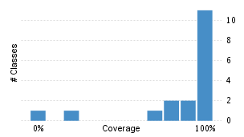
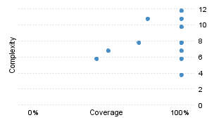

Clover Coverage Report - peaberry
Coverage timestamp:
Mon Jun 30 2008 00:02:12 CEST
Overview
Package File
FRAMES
NO FRAMES
SHOW HELP
Statistics for project Clover database Mon Jun 30 2008 00:02:04 CEST:
Stmts:
201
LOC:
1,417
Total cmp:
73
Stmts/Method:
3.94
Branches:
32
NCLOC:
583
Cmp density:
0.36
Methods/Class:
2.43
Methods:
51
Files:
21
Avg method cmp:
1.43
Classes/Pkg:
5.25
Classes:
21
Packages:
4
2.8%
of code in this project is excluded from these metrics.
Remove Filter
Statistics for project Clover database Mon Jun 30 2008 00:02:04 CEST:
Stmts:
207
LOC:
1,417
Total cmp:
81
Stmts/Method:
3.63
Branches:
38
NCLOC:
583
Cmp density:
0.39
Methods/Class:
2.71
Methods:
57
Files:
21
Avg method cmp:
1.42
Classes/Pkg:
5.25
Classes:
21
Packages:
4
These metrics include filtered code. (
2.8%
)
Apply Filter
Coverage
21 classes, 273 / 284 elements
96.1%
0.9612676
Class Coverage Distribution

Class Complexity

Most Complex Packages
1.
94.9%
0.94930875
org.ops4j.peaberry.internal
(47)
2.
100%
1.0
org.ops4j.peaberry.util
(21)
3.
100%
1.0
org.ops4j.peaberry
(5)
4.
-
-1.0
org.ops4j.peaberry.builders
(0)
Most Complex Classes
1.
94.6%
0.9459459
ImportGlue
(12)
2.
100%
1.0
DynamicServiceBuilderImpl
(12)
3.
100%
1.0
Attributes
(10)
4.
86.7%
0.8666667
ServiceProxyFactory
(8)
5.
100%
1.0
TypeLiterals
(8)
Test Results
10 / 14 tests 2.39 secs
71.4%
Top 3 Project Risks
ServiceProxyFactory
ImportProxyClassLoader
ImportGlue
Least Tested Methods
1.
0%
ServiceProxyFactory.remove() : void
(1)
2.
75%
ImportProxyClassLoader.findClass(String) : Class<?>
(2)
3.
83.3%
ImportGlue.generateProxy(Class<?>) : byte[]
(3)
4.
93.3%
ImportProxyClassLoader.importProxy(Class<? extends T>,Import<?>) : T
(3)
5.
95.6%
ImportGlue.wrap(ClassWriter,String,Method) : void
(4)
Report generated by
Clover Code Coverage v2.2.1
Mon Jun 30 2008 00:02:12 CEST
.
Clover: Open Source License registered to peaberry .